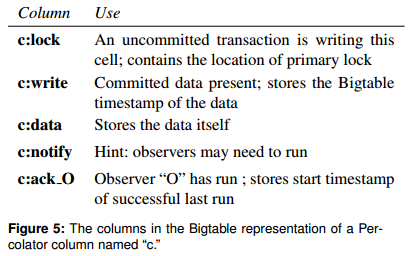
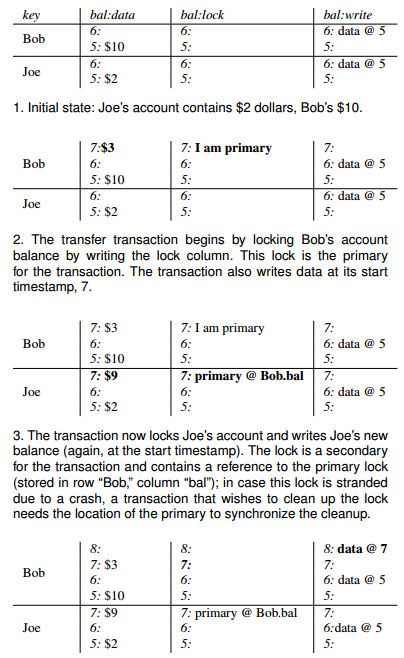
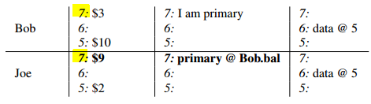
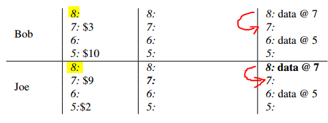

摘要：分析了 Percolator 分布式事务在一些细节上的设计思路和取舍。
背景
Google 搜索引擎的网页索引一直是由 MapReduce 进行批处理建立的，但是 MapReduce 对于索引的增量更新来说处理代价很大，必须针对整个数据仓库重新处理。因此提出了 Percolator 项目，为了提供一种增量处理少量索引更新的能力。
数据在底层存储于分布式存储系统 Bigtable，然而 Bigtable 只能保证行内数据的原子读改写，不提供跨行和跨表的事务 ACID 语义，因此 Percolator 的具体作用正是在 Bigtable 的基础上提供一套真正的分布式事务的解决方案。
条件和约束
支持跨行、跨表的事务，提供 SI 隔离级别的 ACID 语义
适应大规模集群
- 对延迟没有很高的要求
技术点
在 Bigtable API 上非 “侵入式” 地实现
事务状态记录去中心化，无需 Clog 或 Commit Table（时间戳分配仍然是中心化的）
无需全局死锁检测
靠延迟更新机制清理两阶段事务锁
关键问题
如何记录分布式事务状态？
分布式事务状态的记录是实现整个分布式事务 原子提交 语义的关键，正因为如此，一个分布式事务的状态一定是一个单点记录，且需要持久化。通常有几种方式实现：
- 所有分布式事务状态都记录在一个中心化节点上
- 分布式事务状态记录在发起事务的 coordinator上（ie. pgxc）
- 分布式事务状态记录在当前事务中某个写操作的 participant 上（ie. cockroachDB）
方法1，存在单点查询的压力，但优势在于只要保证 oracle 可用，就能防止由于 coordinator 和某个 participant 同时失效而造成的后续事务被阻塞的情况。
方法2，分散事务状态的记录位置，缓解了单点查询的压力，但是如果 coordinator 失效，有可能造成不能确定事务提交状态从而只能阻塞后续事务的情况 ([注1])。为解决这样的情况，需要使用 3PC （可以解决，但是增加通信成本） 或向其它 participant 查询也能缓解这种阻塞（只要有一个 participant 收到了 commit 消息就证明事务已提交）。
方法3，当 participant 的数量比 coordinator 多或者 coordinator 节点经常变更的情况下，将事务状态分散记录在 participant 上会更合适。当然，还可以选择将事务状态分散记录在包括 coordinator 和 participant 的所有节点上，如何选择应该视实际情况分析而定。
Percolator 选择的是方法3，因为 coordinator 的角色实际是由 client 担当，coordinator 并不固定。另外 Percolator 的特别之处在于每个事务选出一个 primary，primary 的 tuple 作为事务提交点记录事务状态，这样事务状态不需要记录在类似 Clog、Commit table 等专门的 log 或表中。
如何实现无全局死锁检测？
Percolator 使用了 No-Wait + 抢占式 abort 的方式处理，类似地，如果使用 Wound-Wait 或 Wait-Die 的方式也无需全局死锁检测（详见 “避免全局死锁检测”）。
系统设计分析
非侵入式实现
事务管理器需要管理 tuple 的状态信息，比如当前增删改的 tuple 是否已经提交、是否处于被锁状态等。这些信息通常被记录在 tuple 的数据结构中，不被用户所见，要实现不修改 Bigtable 中 tuple 的数据结构，非侵入式地记录这些信息，最容易想到的方法就是通过在表上新增加专门的列来记录这些信息，Percolator 正是这么做的。
如下图，Percolator 在 tuple 上增加了一些特殊的列用于实现事务锁、记录事务状态以及实现 Observer 功能：

注：图中假设只有一列数据且被存储在列 c:data 中。
两列特殊列 c:lock、c:write 分别用于在事务中实现 tuple 锁以及“缓存” tuple 状态。
为什么需要 c:write ？
理论上来讲，Bigtable 中的 tuple 是多版本的，后续读事务访问 tuple 的某个版本时，即便没有 c:write 也可以通过 primary 节点查询到对应事务的状态，确认事务提交后证明该版本的 tuple 可见。但是如果每个读事务在访问每个 tuple 时都要通过 primary 节点查询事务状态，对性能会有极大的影响。因此 c:write 在这里实际起到了“缓存”事务状态的作用（虽然称为“缓存”，但是持久化的），即如果 c:write 存在，表示这个版本的 tuple 已经提交了，如果不存在，则需要进一步向 primary 确认。另外，c:write 更新后，事务状态的记录也可以被清理了。
在 tuple 上增加 c:write 类似于 Postgres 在 tuple header 里加上 infomask，Postgres 通过 clog 记录了事务的状态，又在 tuple infomask 上 “缓存” 了事务提交状态。不过 Postgres 和 Percolator 对于 tuple 上状态的更新时机并不相同，Percolator 对 c:write 的更新发生在 2PC commit 流程，而 Postgres 对 tuple infomask 的更新采用的是延迟更新，即事务 commit 的时候并不会修改 tuple infomask，要等到后续事务不能判断 tuple 涉及的事务状态时，由后续事务从 clog 中查询事务状态并更新 tuple infomask。
Percolator 采用的是乐观并发控制，不过基于的并不是最早的那种无锁 OCC 实现，而是在事务执行过程中先将所有写操作结果都缓存在 coordinator 上，等 2PC 流程中再对 tuple 加锁并修改数据，并且只有当所有涉及写的 tuple 都加锁成功才能进行提交步骤，此时其它事务无法对被锁的数据进行修改。另一方面，事务状态被记录在了某个 participant 上以实现原子提交，这样的节点被记为 primary，同时每个节点都需要知道 primary，方便在失效恢复或其他不清楚事务状态的情况下向 primary 查询。
如下图，c:lock 既用来实现互斥锁，也用来记录 primary。在 c:write 还没有更新，不确定数据所涉及的事务的提交状态的情况下，可以通过 c:lock 找到 primary 查询事务状态 。

Snapshot 时间戳分配的考量
无论是只读事务还是读写事务，snapshot 时间戳都通过从中心化节点 oracle 处申请得到，记为 read_ts_。
这里仅讨论基于纯逻辑时钟的方案，有些分布式事务方案没有通过中心化节点分配时间戳（ie. Spanner 的读写事务处理），而是从各个 participant 上直接读取 tuple 最新版本的数据，并且取所有读到的 tuple 的 commit_ts 最大值 + 1 作为当前事务的 commit_ts。Spanner 这种做法的优势在于不需要申请 read_ts，同时 commit_ts 可以计算出来，完全避免了从中心化节点分配带来的单点查询压力，但是问题在于整个事务的读操作拿到的数据并不是基于快照读语义得到的，而是基于可重复读语义，如果要实现 SI 隔离级别，就需要靠并发控制算法进一步判断当前读到的数据是否符合快照读的要求。这对于读写事务来说并没有什么影响，因为读写事务本身就要走并发控制流程，但对于只读事务来说，为了满足快照读，必须走并发控制流程判断是否有 tuple 在其被读到时的 commit_ts 至计算出的 commit_ts 之间被其它事务该写过（这里计算出的 commit_ts 对于只读事务来说相当于 read_ts），一旦发现被改写过，证明本次可重复读并不满足快照读的要求，必须 abort 当前只读事务。
因此，在读写事务比较频繁的情况下，可能会造成只读事务的频繁 abort，降低系统性能。如果采用中心化时间戳分配的方案，只读事务无需走并发控制就能提供快照读语义。那么对于读写事务比较频繁的场景，当：
中心化分配时间戳造成的性能损失 < 只读事务走并发控制导致 abort 造成的性能损失
时，对只读事务采用中心化时间戳分配的方案对事务性能会更有利。
1 | class Transaction { |
事务执行
当事务拿到 read_ts_ 后，开始事务执行流程，读操作向存储数据的各个 participant 以 read_ts_ 时间戳读取数据（快照读），不同的是，写操作只是修改本地缓冲区中的值（OCC，延迟到 prepare）。
读数据的过程其实就是在寻找 tuple 在 [0, read_ts_] 间对外部可见（visible）的最新版本。事务的提交是“原子”的，一个事务的提交点在 commit 阶段（见“事务 commit”）完成，commit 阶段在清除了 primary 上的 c:lock 、更新了 c:write 且确认了事务在 primary 上提交（持久化事务状态）后即表示事务提交成功。不必保证所有 participant 上的 tuple c:lock 和 c:write 都更新完才认为提交了事务，因为没有必要，此时所有的数据已经在 prepare 阶段成功更新了，只剩下 c:lock 和 c:write 的更新工作还没完成。实际上过了提交点就可以返回给 client 事务已经提交的回复，这对降低事务的延迟会有帮助。
当然，这对于读操作也引入了更多的考虑，假设等所有 tuple 都更新完才在 primary 上的 tuple 上清除 c:lock 确认事务提交，那么读操作只要看到 c:lock 没被清除，事务就一定没有提交，对可见性判断会更方便，而现在 c:clock 没被清除并不表示事务没被提交，对于 secondaries 上的 tuple 状态可能存在两种情况：
A1. c:lock 已清除、c:write 存在
A2. c:lock 未清除、c:write 不存在
针对情况 A1，当 tuple 在 [0, read_ts_] 间不存在 c:lock 时，说明 tuple 涉及的事务一定已经提交了，直接找到 commit_ts 在 [0, read_ts_] 中最新的版本即可。
针对情况 A2，c:lock 未清除，又可以分两种情况：
B1. 事务已经提交，但 secondaries 还未更新
B2. 事务正在进行，但未提交（包括 coordinator 已失效，c:lock 成为待清除的残留信息的情况）
也就是说，c:lock 未清除的情况下，tuple 涉及的分布式事务状态是不确定的，这里也称为不确定状态的事务，事务状态不确定，但是事务状态却会影响当前事务读操作的行为。对于情况 B1，tuple 对当前读可见，对于情况 B2，tuple 不可见。
对于不确定状态的事务处理，这里列两种不同的处理方式，”主动查询” 和 “被动等待”。
主动查询不确定状态的事务
既然整个分布式事务的状态决定了后续事务读的处理方式，那么就去事务状态记录节点，也就是 c:lock 记录的 primary 上去查询事务状态吧，这就是一种 “主动” 查询的方式，也是 Percolator 的选择。
对于情况 B1，通过 primary 查询到事务已经提交，那么就 roll forward 帮忙更新 c:lock 和 c:write 后，重试读取 tuple 流程。
对于情况 B2，因为 primary 中查询不到已提交信息，说明事务还在进行，或者事务已经 abort 但残留的锁还没清理。但是对 tuple 还不能以不可见处理，因为虽然 tuple 涉及的事务还没有提交，但是已经申请到了 commit_ts，且 commit_ts 小于当前事务的 read_ts，一般来说，这时需要等待 tuple 涉及的事务完成。
不过 Percolator 没有选择等待在 tuple 上，而是采取了另一种方法，abort tuple 涉及的事务，这就不用在 tuple 上继续等待了。之所以这么设计，我想一方面是等待问题，还有一方面涉及到对事务残留锁的处理，因为 c:lock 未清除也可能因为之前节点失效造成的事务残留，Percolator 没有其它的服务来处理这种残留事务锁，因此选择 abort 的策略，不管 tuple 上的 c:lock 是还在进行中的事务设置的还是 abort/不可追溯的事务残留下来的锁，都通过 abort 事务清理。不过问题在于有可能把正在正常进行中的事务给 abort 了（解决方案见 “事务残留清理”）。
之后重试读取 tuple 的流程。
“主动” 查询的方式，优势在于不会出现事务读操作在 tuple 上白白等待的情况，劣势是会增加一些通信开销。
综上，相关的代码如下：
1 | bool Transaction::Get(Row row, Column c, string* value) { |
被动等待不确定状态的事务
和 “主动” 查询相对应的方法就不去事务状态记录节点查询，而是等待通知。比如 pgxc 的处理方法是等待 tuple，直到 tuple 上的锁被清理，不管事务最终是 commit 还是 abort，会有 gs_clean 服务周期性地查询每个 participant 上 prepared 但未 commit 的事务，然后帮忙去 coordinator 查询事务状态并通过 coordinator 重新向对应的 participant 发送 commit 或 abort 消息。之所以 pgxc 可以使用这样的方法是因为有固定的多个 coordinator，并且事务状态也是记录在 coordinator 上的。
关于 “被动” 等待的处理方式，存在一个问题：如何区分当前事务应该在这个 tuple 上等待，还是视其为不可见？实际上，只要本地没有事务提交记录，都需要等待。有些分布式事务不是基于分布式并发控制的做法，而是将查询下推到各个 participant，各个 participant 执行查询相当于执行本地事务，那么在 participant 上也会有本地的事务状态记录，本地事务提交意味着整个分布式事务一定已经提交，但本地事务未提交，并不意味着整个分布式事务未提交。假设整个事务未提交，后续读事务应该视其为不可见，假设整个事务提交，后续事务应该等待在 tuple 上，然而是无法在 participant 本地确认整个事务状态的，所以这种情况只能等待在 tuple 上。不过，有一些可以优化的点，比如将 prepared 事务的事务状态记为特殊的 prepared_committing 状态，遇到 prepared_committing 状态才等待，prepared_committing 之前的状态都视为不可见，这样减少了不必要的等待时间，当然，还是存在 prepared 事务最后 abort 了，导致后续事务在 tuple 上白白等待的情况。
事务 prepare
由于采用了 OCC 的并发控制算法，对 tuple 的加锁以及数据的更新工作被推迟到了 2PC 的 prepare 阶段。prepare 的作用是为了对所有涉及写的 tuple 加锁，并更新数据，只有确认所有 tuple 都成功加锁后才能进行 commit，因为需要保证数据被本事务修改到 commit point 之间不能被其它事务又修改了。
加锁顺序
从事务执行的逻辑来看，当发现 tuple c:lock 没有被清理时，需要向 primary 查询事务状态，primary 总是在加锁过程中被写入 c:lock，所以无论加锁的顺序如何，都能保证这个执行流的正确执行。
那么有没有可能向 primary 查询事务状态时不通过 primary 的 WAL？
实际上对加锁顺序做一个小小地调整就可以做到。事务的提交点保证了 primary 上 tuple c:lock 已经被清除，那么如果向 primary 查询事务状态时发现 tuple 的 c:lock 不存在，是否可以认为事务已提交？ 这需要保证除了提交点之后的任何时候，任意 secondaries 的 c:lock 加锁后，也必须能看到 primary 的 c:lock 已加锁，换句话说，primary 的 c:lock 总是先于任何 secondaries 的 c:lock 先加锁。因此，Percolator 会先对 primary 加锁，后对 secondaries 加锁，这也决定了 Percolator 的事务状态不需要用类似 Clog 或 Commit Table 的方式记录 。
避免全局死锁检测
全局的死锁检测就是在一个单点上记录每个节点的加锁情况，并在检测到锁与锁之间出现环后通过 abort 事务防止死锁，另外有几种方法可以避免需要全局死锁检测，比如：
控制加锁顺序，完全防止死锁的出现。这通常在单机乐观并发控制上使用，因为第一 OCC 会在事务执行后加锁，所以可以对整个事务的加锁顺序进行排序，如果基于类似 2PL 的悲观控制算法，加锁时根本不知道后续还要对那些 tuple 加锁，无法排序。第二，单机情况下，加锁顺序可以简单地按照 tuple 在内存中的地址作为排序的依据，而分布式下，tuple 没有显式的全局唯一、可排序的 “地址”，需要额外设计（ie. 以节点 id + 内存地址等作为全局唯一地址）。
不防止死锁的产生，而是非阻塞地加锁。这里面又能分为三种方法：
No-Wait
T2 看到 tuple 被 T1 加了锁，就主动 abort。存在一个问题，可能出现 T1和 T2 看到对方都持有了自己需要拿的锁导致两个事务都主动 abort，但其实只需要其中一个事务 abort 即可。
Wait-Die
为了避免 No-Wait 的问题，T2 看到 tuple 被 T1 加了锁，就比较 T1 和 T2 的事务 xid，如果 T2.xid 更小，就等待，更大就主动 abort，这种保证了两个事务看到对方持有自己需要加的锁后只会有一方主动 abort，因为 xid 更大的总是 abort，所以这种方法是
非抢占式的。Wound-Wait
和 Wait-Die 的原理相同，只是判断事务 xid 后的决策相反，xid 更大的允许 abort 对方事务，这也称为
抢占式处理。
Percolator 既使用了 No-Wait 的处理机制，也使用了 “抢占式” abort 其它事务的处理机制。在 prepare 阶段，当事务 T2 看到 T1 被加了锁，T2 会主动 abort。同时，在事务执行 Get 时，发现 c:lock 未清除并且 primary 未提交的情况下回选择 “抢占式” 地 abort 对方的事务。事务 xid （这里应该是将 read_ts_ 直接作为 xid 使用）会记录在列中，如下图所示：

综上，相关的代码如下：
1 | bool Transaction::Commit() { |
事务 commit
事务 prepare 阶段确认所有 tuple 都加了锁并更新完数据后，才能进行 commit 流程。commit 时的顺序是非常重要的，因为 primary 作为整个事务的提交点必须首先提交成功，后提交其它的 secondaries。
如下图，提交通过删除 c:lock 并写入 c:write 的方式完成，写入 c:write 其实是新加了一个版本，时间戳用commit_ts， c:write 指向prepare时写入的数据：

处理抢占式 Abort
由于 Percolator 为了避免全局死锁检测使用了 No-Wait + 抢占式 abort 的处理机制，因此在事务真正提交前事务有被其它事务 abort 的可能，这时会发现 c:lock 已经被清除，不能继续提交，必须在提交前判断 c:lock 是否仍然存在。如果事务已经被 “被动” 地 abort，就不能继续提交，若事务成功提交，就不能被 abort，所以 BackoffAndMaybeCleanupLock 和查询 c:lock 并提交 primary 两个流程必须都在单行事务内原子地完成，这样才能保证只有一方能成功地执行。
综上，相关代码如下：
1 | bool Transaction::Commit() { |
事务残留清理
可以注意到，无论是事务 abort 还是节点失效，或者是事务正在进行中，都会在 tuple 上残留下 c:lock，这些残留的 c:lock 会在后续的事务执行时通过 Get 清理，这就引入了一个问题：正在正常进行中的事务被误 abort 了！所以，需要有机制判断事务是否在进行中。Percolator 通过节点周期性地向 Chubby 服务节点写 token 来宣布节点的 liveness，以及写 Wall Time 来宣布进程是否正在工作中，那么事务在 abort 其它事务前先通过 Chubby 服务确认节点是否有效以及事务是否正在进行，就能防止误 abort 正常执行中的事务了。
思考
- 既然选择使用 OCC，是否可以通过对 write-set 排序后加锁的方式避免死锁？
- 为什么修改 write 不是 inplace 地修改数据行，而是要新增一个版本？
参考资料
[1] Daniel Peng and Frank Dabek. 2010. Large-scale Incremental Processing Using Distributed Transactions and Notifications.
[注1]: “coordinator 失效就无法直接获取事务状态信息，意味着有可能无法判断事务是否已经提交，因为假设从其他 participant 上查询发现没有收到 commit 消息，并不能证明事务没有提交。”